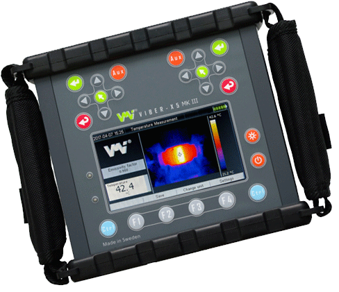

Instrumentos de Medición
Vibración.

VIBER X5
- Analizador de vibraciones de fabricación Sueca con potente procesador.
- Balanceador en 2 planos, útil para descubrir resonancias que pudieran provocar altas vibraciones, posibilidad de utilizar módulos para medir entre varias cosas el estado de operación en motores de corriente alterna, posibilidad de utilizar transductor triaxial y opción de software con librería completa de todos los rodamientos.
VIBER X1
- Medidor de vibraciones y condición de rodamiento de fabricación Sueca, indispensable para la inspección de toda línea de producción.
X-VIBER
- Medidor y analizador de vibraciones marca VMI de fabricación Sueca modelo X Viber. Mide también temperatura por la vía infrarroja , RPM sin contacto, software incluido en el equipo para creación de rutas, programación de alarmas y reportes de trabajo
ESTROBOSCOPIO
- Instrumentos para el chequeo de sus ventiladores y medición de RPM, rotores, útil para revisar impresiones de etiquetas, auxiliar para el balanceo de rotores junto con analizadores de vibraciones.
TERMOGRAFÍA Y TEMPERATURA.

KM340
- Termómetro digital para 2 canales con rango de medición de -50 a 1300 º
IHS 8871
- Termómetro de rayos infrarrojos con indicador de láser con rango de medición de -40 a 500°C
Colector de Datos (data logger)
- Ideal para controlar las temperaturas y humedad en los laboratorios, incubadoras, empresas, y otras áreas que necesite controlar y monitorear. Interfaz USB para descargar la memoria a su PC para futuros análisis.
PT5LD
- Termómetro de rayos infrarojos de fabricación Japonesa con rango de medición de 0 a 500ºC, con ajuste de emisividad y memoria de 99 puntos, indicador láser.
EZTHERM
- Cámara termográfica , toma imagen digital y termograma al mismo tiempo útil para la ubicación exacta del área con alta temperatura, entrada para grabación de audio, con enfoque automático y manual, alta resolución, medición de temperatura hasta 550°C, cuenta con una característica que permite ubicar desarrollo de moho en edificios, almacenes, plantas industriales, software incluido para la elaboración de reportes.